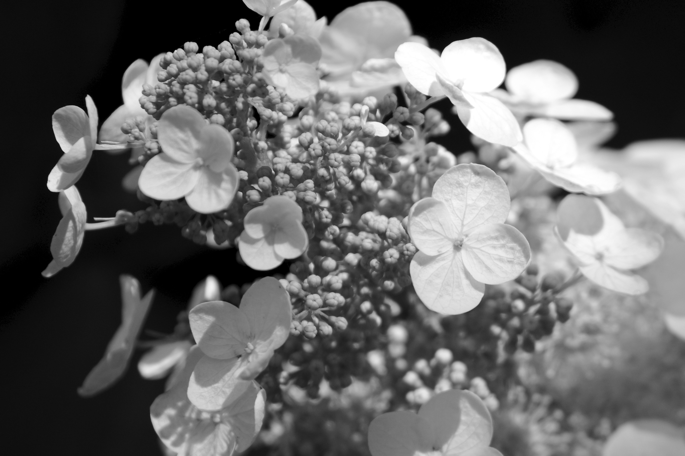
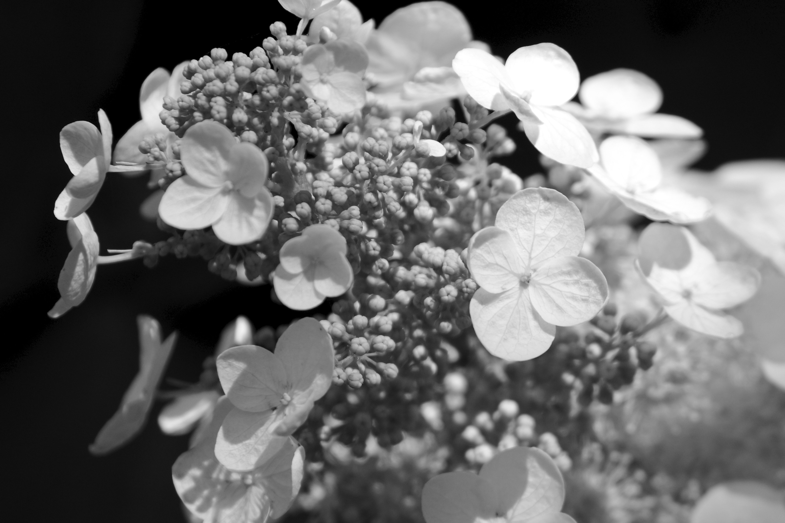

desk pouch
Product Design
PDI Studio III - Fall 2015
Assignment
The goal was to create or redesign a product for the PDI Studio in three weeks. This project was a solo project.Research and Problem Definition
My research began with analyzing the Studio and its physical properties. The PDI Studio is the classroom where Programs in Design and Innovation students take their studios (I through VI) in addition to a few other courses that PDI students take. Recently renovated with new paint and furniture, the Studio was generally a clean and organized space. The Studio consists of several, rectangular desks that can be moved around easily. The chairs are on the taller side, with a back, wheels and several levers to adjust height, lean and back support. In addition, there is a projector, its screen, and a large bulletin board used to pin up posters or other design work. The Studio has neutral colored walls to "promote design thinking" and three, large windows that can open (and actually have several cracks in them which cause the Studio in winters to be very cold). There is a skylight that takes up about a third of the ceiling space, which also lets in a lot of cool air during winter. These physical observations could go on and on... but what I noticed is that I was taking note of all of the things that were present. Instead, I tried doing the opposite, and thinking about what wasn't there. If I learned anything about ethnography and observation during my times as a design student at RPI, it's that it is just as important to take note of the things that aren't present as well as things that are.The Studio is a plain space, with not much furniture other than the desks and chairs. Since there is a lack of space to put materials, then students pile their backpacks, coats, laptops, chargers, books, and more on these desks. When four or more students crowd around a table to work on a project, they all throw their coats and bags in the middle of the table, creating chaos. This clutter leaves little to no space for students to get work done or can be distracting. It was now clear that I had my problem and intended user group: to reduce clutter in the Studio for PDI students.
Research for this included observations and interviewing PDI students. Observations were done by simply watching PDI students come into Studio, get organized and begin working. Interviews were easily done since I had Studio III with other PDI students. After asking other students about their work habits, organization habits, and experience working in the Studio, I had all I needed. This project was intentionally kept on a small scale due to the time frame and other reasons later discussed.
Design and Development
After I had my problem defined, I moved onto brainstorming solutions. By quickly jotting down whatever ideas came to mind, I was able to select some of the more practical and hopefully successful solutions. Ideas such as a coat rack so our coats wouldn't take up as much room, redesigning the desks, which would be impractical and expensive, and desk add-ons all came to mind. A desk add-on could be something like a clip or hook on the side of the desk to hold backpacks, coats or trash cans to easily discard trash. These desk add-ons would provide an easier storage space that is more accessible instead of putting backpacks on the ground or desktops. Instead of the hook, I decided to focus on attaching a pocket to the side of the desk. Much like the hook, it would provide extra storage space but instead for materials, such as laptops, books, markers and more. This would provide the extra space the PDI students and I were looking for.The first prototype of Desk Pouch was made out of half of a Forever 21 shopping bag, cardboard, magnets and hot glue (seen on the left). While creating this first prototype, I noticed a challenge would be attaching the desk pouch to the desks found in Studio. Since the Studio was recently renovated, including the addition of brand new desks, I could not drill any holes or modify the desks in any way. My idea of attaching a long, thin, magnetic strip to the side of the desk (with magnets on the Desk Pouch to attach anywhere on the desk with ease) was thrown out the window. Due to the time constraints of this project, I was forced to move onto testing without having a solution for attachment.
Testing
Testing the Desk Pouch included user testing with PDI students. Simply showing them the Pouch and its capabilities was the majority of my testing. Since I couldn't attach the Pouch to the desks yet, that part was left up to my hands to hold it in place and their imaginations. Positive responses from students allowed me to move onto my second phase of prototyping.Design and Development: Round Two
​In any design process, I find it important to iterate as often as possible. Designers are constantly thrown with new challenges and information that cause us to take a couple steps back or revisit the drawing board to start over. Luckily, this wasn't the case.The second round of designing and development included me figuring out a proper material for the Desk Pouch as well as a method to hook it onto the desk. After taking materials such as plastic, rubber, canvas, and wood into consideration, I decided to pursue canvas. Testing my product allowed me to conclude that the Desk Pouch would be most successful if flexible.
As far as attachment went, I looked into materials such as magnets, Velcro, plastic hooks and metal clamps. Magnets, as discussed earlier, were ruled out since modifications to the desks were forbidden. In addition, Velcro was ruled out since the Pouch was expected to support several pounds and Velcro was not sturdy enough. In addition, Velcro would require modification to desks which was prohibited. The second prototype I created (seen to the left) was made out of a canvas material and hooks. The hooks were not sturdy and often slipped when materials were placed in the Pouch.
Final Design
The final design of the Desk Pouch consisted of a canvas pouch with metal clamps to attach the Pouch to any desk. The canvas was chosen due to its durability, strength and its ability to be easily cleaned. In addition, its flexibility was also a key feature.The attachment method was the hardest to chose. The metal clamps were chosen because they were the sturdiest option out of all of the materials I researched. If students placed their laptop, notebooks, pens and more in the Pouch, the attachment would have to be strong enough to hold on to the desk. In addition, the clamps were beneficial due to the fact that the Pouch could be detached from the desk and put into a backpack (easily folded due to the canvas material) to be taken home and used there. Since the clamps are adjustable, the Desk Pouch can fit not only on PDI Studio desks, but the majority of all tables and desks. This allows the Pouch to be used in multiple locations. Lastly, the clamps allowed the user to place the Pouch anywhere desired, whether adjacent to their workspace, on their laps or on the other side of the desk.
Competing products, such as under the desk storage, don't allow for easy access. This can also get in the way of users' legs, causing discomfort. Hooks on the backs of chairs provide storage for backpacks and materials, but reaching around is inconvenient. The Desk Pouch is the simple solution to desk clutter since it is easily accessible, flexible, and durable.
Recommendations
If I had more time with this project, I would have conducted more user testing because I believe user feedback is important and can provide important insights.In addition, I would have tried out a wider variety of materials for the Pouch as well as the attachment methods.
My Role
Since this was a solo project, my role included: problem definition, research, brainstorming, prototyping, iteration, and user testing.Back to Design Projects


 
